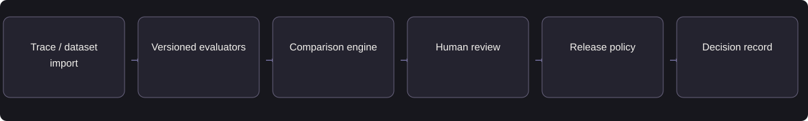

AI PLATFORM / EVALUATION
EvalPilot
Compare AI versions, investigate regressions, and make release decisions using quality, risk, latency, and cost.
- Target user
- AI PMs, engineers & domain reviewers
- My role
- Independent product strategy & design
- Status
- Additional design study
- Period
- Portfolio study · 2026
Block a candidate with a confirmed critical regression even when its average pass rate improves.
Available evidence: Release-policy example · evaluator design · regression scenarios
Independent product design. Screens and scenarios are illustrative. Evaluation targets and deployment steps are proposed; live results are not claimed.
01Problem & opportunity
AI teams review model quality, latency, and cost separately. An update can improve the overall pass rate while introducing a critical failure. Product and engineering teams need a consistent way to identify regressions and decide whether a candidate is ready for release.
Customer objective
Help an AI team compare two versions and produce an auditable go / no-go recommendation.
User needs
The AI PM needs an explainable go/no-go decision. Engineers need the failing input, output, tool response, and version. Domain reviewers need a focused queue for ambiguous results. Each role needs the same evidence and a clear decision owner.
02Discovery & product judgment
Why AI is appropriate
An LLM judge scores criteria such as relevance and policy adherence. Failure clustering helps reviewers identify recurring issues. Deterministic checks calculate exact matches, costs, missing cases, and release gates. Human reviewers adjudicate disputed judgments.
Alternative considered
Use scripts and spreadsheets for a small, stable test suite. A shared product becomes valuable when repeated releases, multiple reviewers, and different evaluators make decisions difficult to reproduce.
Discovery and validation priorities
- Observe an existing release review and map how evidence is assembled.
- Interview AI PMs, engineers, and reviewers about missed regressions and false alarms.
- Baseline review time, decision disagreements, and evidence gaps before proposing automation.
Prioritize transparent failure handling and human control before increasing automation.
03Product requirements & MVP
MVP scope
Dataset upload, baseline/candidate comparison, per-case evidence, human labels, versioned thresholds, and release report.
Functional requirements
Pin dataset and evaluator versions; flag missing runs; keep human adjudication separate; retain the reason for each blocked gate.
Non-goals
Training models, hosting agents, automatic production rollout, and claiming a universal quality score.
Non-functional requirements
Define latency and total-task cost budgets, versioned configuration, access boundaries, failure recovery, and auditability before a pilot.
Prioritized capabilities
| Priority / state | Capability | Acceptance criterion |
|---|---|---|
| P0 | Comparable versions | Given two runs, compare only matching case IDs and report missing or duplicate IDs. |
| P0 | Critical release gate | Given one confirmed critical regression, show BLOCK even if the average score improves. |
| P0 | Evidence inspection | Given a failed criterion, show input, output, rule/judge rationale, and evaluator version. |
| P1 | Human adjudication | Given a reviewer disagrees, preserve both labels and record the decision and rationale. |
| P1 | Live trace sampling | Given pilot traces, sample by risk as well as random selection and redact sensitive fields. |
Representative user story
As a ai pm, I need to inspect the system outcome and escalate exceptions so I can make a reliable decision.
MVP workflow walkthrough
A scripted design walkthrough using synthetic examples.
Start with comparable evidence
Select a versioned dataset and import baseline and candidate outputs. Match case IDs before comparing.
04Architecture & AI workflow

Proposed MVP: one JSON trace format, two text-based task types, versioned datasets, deterministic checks, an optional calibrated judge, and a manual release approval. Continuous deployment control is out of scope.
| Trade-off | Product decision |
|---|---|
| Judge automation vs. trustworthy labels | Calibrate fuzzy criteria against independent human labels; preserve unknown and disagreement states. |
| One score vs. useful slices | Show task, language, risk, and failure-category slices; a weighted average cannot override a critical gate. |
| Broad platform vs. a buildable MVP | Support two trace types first; defer SDKs, agent hosting, and enterprise connectors. |
Failure handling
Missing evidence → incomplete. Judge disagreement → human review. Critical regression → block regardless of average improvement.
Observability & data boundaries
Record input and version identifiers, validation status, corrections, tool failures, latency, and cost. Restrict data access, redact traces, and define retention before collecting pilot data.
05Evaluation & guardrails
| Metric | Definition / measurement | Target or validation approach | Product relevance |
|---|---|---|---|
| Critical-defect recall | Detected critical defects ÷ known critical defects | Proposed: 100% on seeded qualification cases | Measures whether the platform catches release-blocking failures. |
| False approval rate | Unsafe candidates approved ÷ unsafe candidates reviewed | Proposed: zero in qualification; monitor in pilot | Prevents a misleading release recommendation. |
| False block rate | Acceptable candidates blocked ÷ acceptable candidates reviewed | Set the threshold with pilot reviewers | Controls unnecessary release delays and alert fatigue. |
| Human–judge agreement | Matching labels ÷ independently reviewed judgments | Proposed: ≥90% per criterion before automation | Shows whether automated scoring reflects domain expectations. |
| Release review time | Median time to complete a version comparison | Proposed: 30% below the existing workflow | Measures product value for the team making the decision. |
| Evaluation cost | Total grading cost ÷ evaluated traces | Track by evaluator and task type | Keeps continuous evaluation affordable. |
Offline evaluation
Dataset
Seed known defects into trace pairs; include clean pairs and ambiguous outputs. Hold out defect families when testing generalization.
Independent labels
Two reviewers label criticality and correctness; adjudicate before evaluating the judge.
Checks
Defect recall, false approval rate, false block rate, judge agreement, and repeatability by task type.
Regression
Compare judge/rubric versions on the same independent suite; include judge failures in the release report.
Online evaluation & experimentation
Product value
Measure review-task completion time and whether reviewers can explain the release decision.
Quality
Audit sampled approvals and blocks with independent human review; track overrides and missing evidence.
Operations
Track evaluation spend, queue delay, evaluator failures, and alert burden.
Feedback loop
Route disputed evaluations to adjudication; add resolved errors to a versioned benchmark without contaminating held-out tests.
Predeclare the primary outcome, guardrails, allocation unit, and sample-size requirement before an A/B test. Small usability studies provide directional feedback, not causal business uplift.
Representative evaluation cases
| Case | Scenario | Expected behavior | Severity |
|---|---|---|---|
| EVAL-01 | Higher mean; critical regression | Block and identify the exact failing gate. | Critical |
| EVAL-02 | Candidate missing five cases | Mark comparison incomplete; do not score absent cases as passes. | Material |
| EVAL-03 | Judge says pass; gold says fail | Record disagreement and request adjudication. | Material |
Proposed qualification gate: every seeded critical defect is detected, missing evidence never produces a pass, and the measured false-block rate is acceptable to pilot reviewers. Report denominators and confidence intervals.
06Launch & iteration
Current state and release sequence
Proposed internal pilot: run EvalPilot alongside existing manual reviews. Compare decisions without granting deployment authority. Expand to a second task type only after reviewers trust the evidence trail.
Operational readiness
Version models, prompts, tool contracts, and configuration. Assign product and engineering owners, test access permissions and dependency outages, and verify support and rollback before a pilot.
Rollback and escalation
Disable automatic recommendations if an adjudicated critical false approval occurs. Keep raw comparisons accessible and revert to manual release review. Version and roll back faulty evaluator configurations.
Next validation priority
Run a release-review task study with AI PMs and engineers. Compare review time, critical-defect detection, and decision agreement against their existing process.
07Outcomes & learning
A release-management design with explicit critical-failure rules and a reviewer workflow. The storyboard is illustrative; there is no running evaluation platform or measured reduction in review time.
Product learning and next decision
A high average can conceal a critical regression. The next decision is which evaluation criteria can be automated reliably and which still require domain review.
08Supporting artifacts
Concise artifacts for reviewing the requirements, architecture, acceptance criteria, and evaluation approach. These are independent design examples.